The Vampirate Series
"My agents have encouraged publishers to use the same cover artwork and Vampirates logo, even if it means changing a letter here or there. Almost all of them have done this - the exceptions being the super-stylish Italians (who elected to put Lorcan Furey on their cover) and my US publisher, Little Brown, who commissioned some very different, but nonetheless stunning, artwork. I'm happy to say that both these publishers did still use the logo, so that the books have a strong link wherever you pick them up and whatever language you read them in."
The books below are in the correct reading order. The bonus books are not essential to follow the story and can be read independently from the main story. As almost every country seems to have their own covers to this set of books, so I thought you might enjoy seeing some of them.
Book 1 - Demons of the Ocean
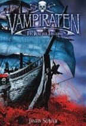
 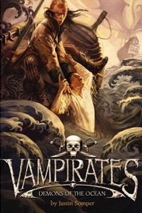 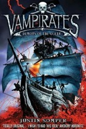
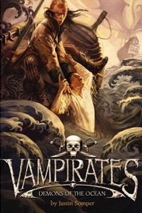 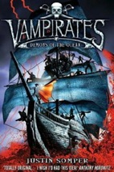  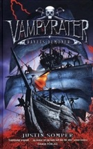 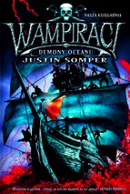 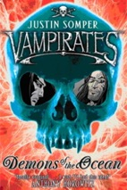
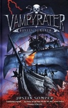 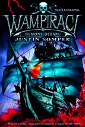 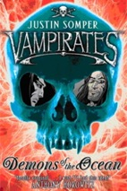 Book 1½ - Dead Deep
Bonus book produced for the UK's World Book Day 2007.
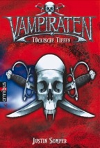
Books 1 & 2 - Tempest & Furey
To be released later
Book 2 - Tide of Terror
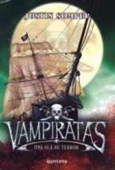
 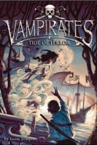 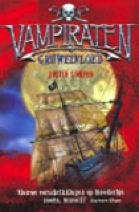 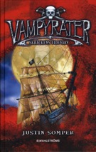 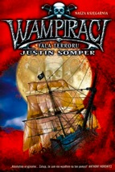 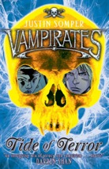
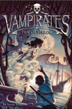 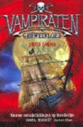 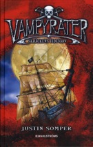 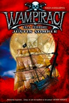 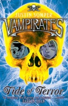 Book 3 - Blood Captain
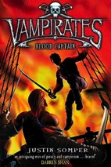 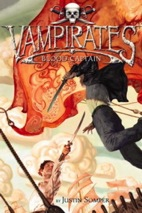 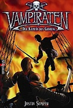 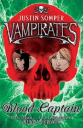
Book 4 - Black Heart
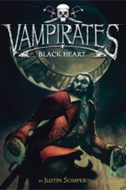
Book 5 - Empire of Night
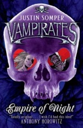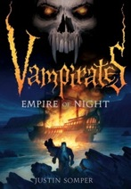
Book 6 - Immortal War
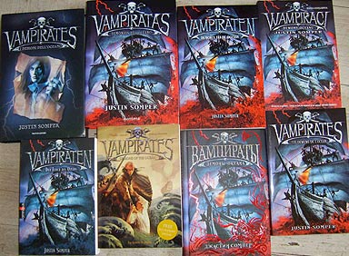
Grace's book of crossing stories
No title, covers or position have been released.